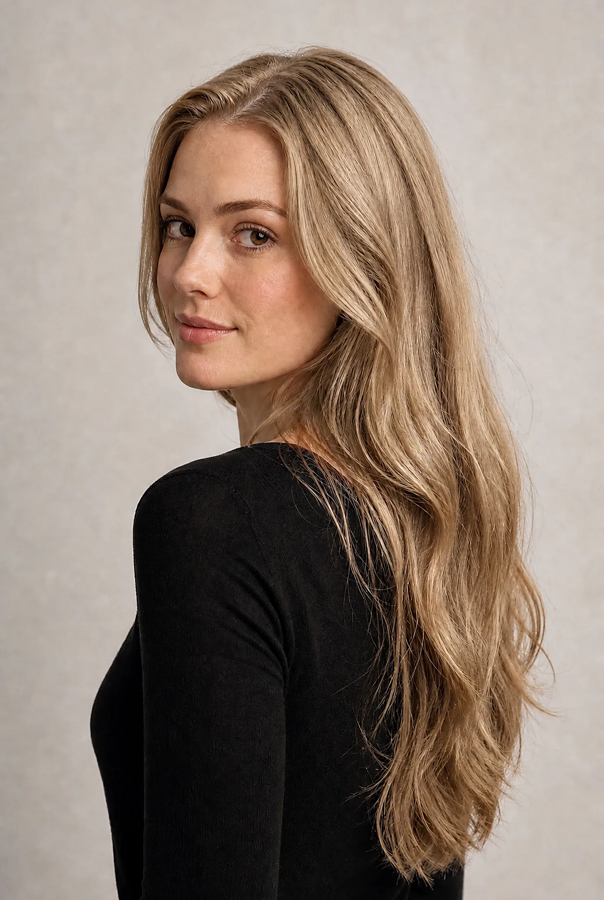
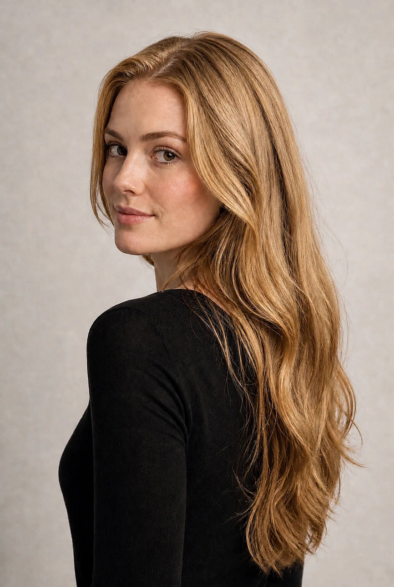
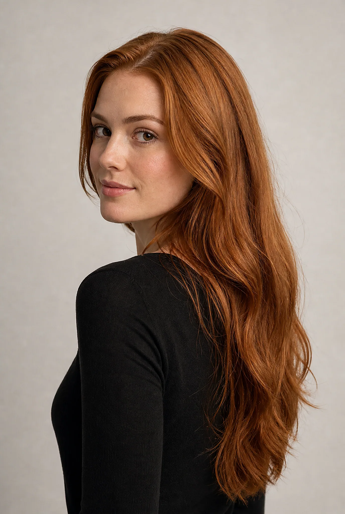
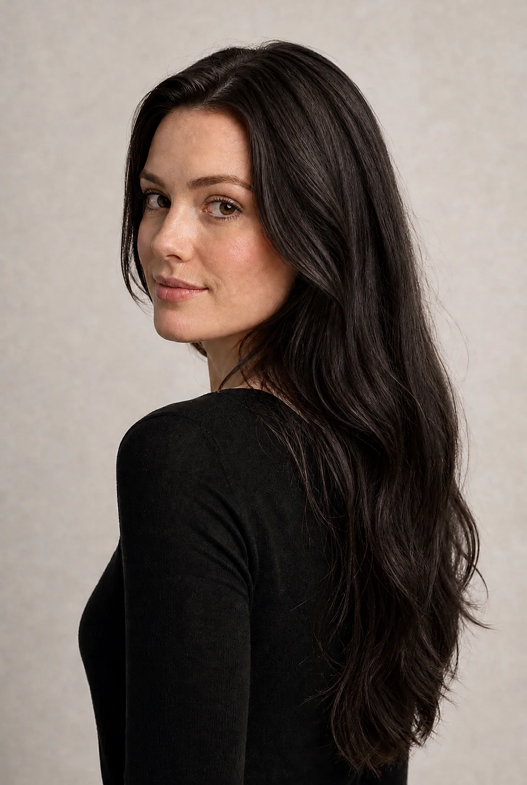
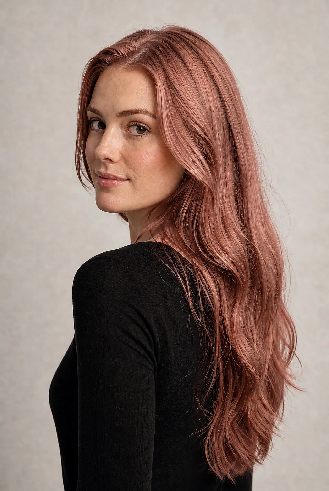
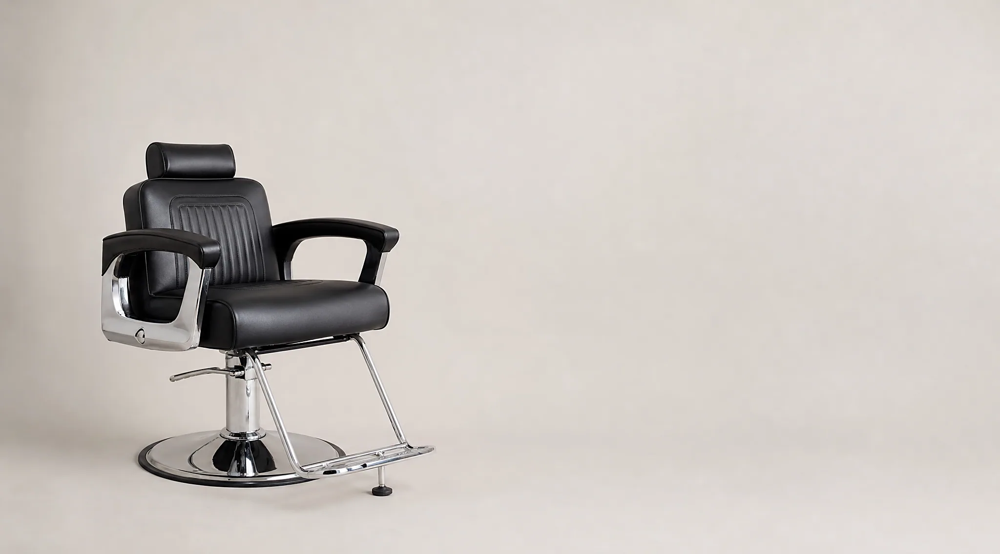
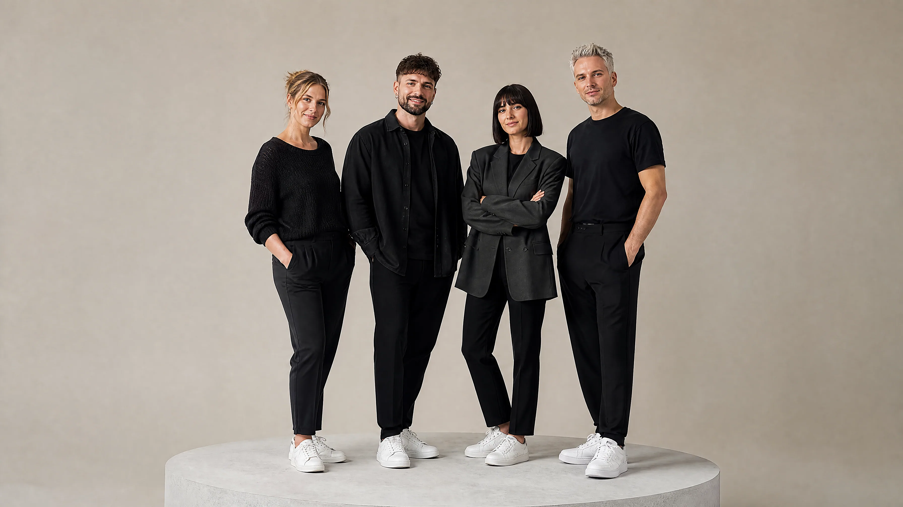

Erst reden.
Dann schneiden.
Jeder Termin beginnt mit fünf Minuten Beratung vor dem Spiegel. Kopfform, Wirbel, Alltag – dann entscheiden wir zusammen.
So läuft die BeratungJeder Termin beginnt mit fünf Minuten Beratung vor dem Spiegel. Kopfform, Wirbel, Alltag – dann entscheiden wir zusammen.
So läuft die BeratungDrei Aufsätze, dann freie Hand: Wir blenden 0,5 auf 9 mm, bis keine Kante mehr zu sehen ist.
Schnitt & Übergang im DetailRund, eckig oder ausgefadet: Die Nackenlinie zeigen wir dir im Handspiegel, bevor du aufstehst.
Nackenlinien erklärtWangenlinie, Hals, Übergang vom Fade in den Bart – im selben Termin, ohne zweiten Stuhl.
Bart & KonturMänner oder Frauen, drei Fragen, sechs Looks. Der Kopf ist rum – jetzt bist du dran.
Zum Look-FinderBeantworte drei Fragen. Wir markieren, was passt – und jeder Look hat eine eigene Seite mit Ablauf, Pflege und „Wann wieder?“.





Tipp auf eine Farbe. Kein Filter: Jede Variante ist ein eigenes Foto, damit du siehst, wie die Farbe auf echtem Haar fällt.
Ansatz und Glanz halten 6–8 Wochen. Vorher machen wir einen Strähnentest.
Farbe, Balayage & Pflege
Kein Anruf, während wir schneiden. Wähle Leistung, Stylist und Zeit – frei werdende Termine bekommst du auf Wunsch per SMS.
Demo: Zeiten sind Beispiele, es wird nichts gebucht.

Friseursalons in Deutschland, Ende 2025 – 245 weniger als im Vorjahr.
neue Ausbildungsverträge Friseur/-in 2025 – bundesweit.
weniger Friseur-Azubis in NRW seit 2014.
So lange hält ein Schnitt, bis er rauswächst (Erfahrungswerte).
Quellen: Zentralverband des Deutschen Friseurhandwerks, PM 06/2026 „Wirtschaftliche Lage“ (Salons, Ausbildungsverträge nach BIBB); Bezirksregierung Arnsberg (NRW seit 2014). Stand 11/2026.
Wir suchen Azubis und Friseur:innen. Feste Kundschaft ab dem ersten Monat, Meisterkurs bezahlt, Freitag oder Montag frei.
Alles zu Ausbildung & JobKein Anschreiben. Drei Tipps.
Demo: Es wurde nichts gesendet. Im echten Betrieb ruft Theo innerhalb von 48 Stunden zurück.
Dieser Musterbetrieb hat noch keine echten Bewertungen. Im echten Betrieb stehen hier Google-Note, Anzahl und Stand – live gezählt.
„Endlich hat mir jemand erklärt, warum mein Wirbel immer absteht – und den Schnitt danach gerichtet.“
Beispiel · noch keine echte Bewertung„Termin um 22 Uhr im Bett gebucht, am nächsten Morgen war eine Lücke frei. Kein Anruf nötig.“
Beispiel · noch keine echte Bewertung„Farbe vorher auf dem Foto gesehen, genau so ist sie geworden.“
Beispiel · noch keine echte Bewertung